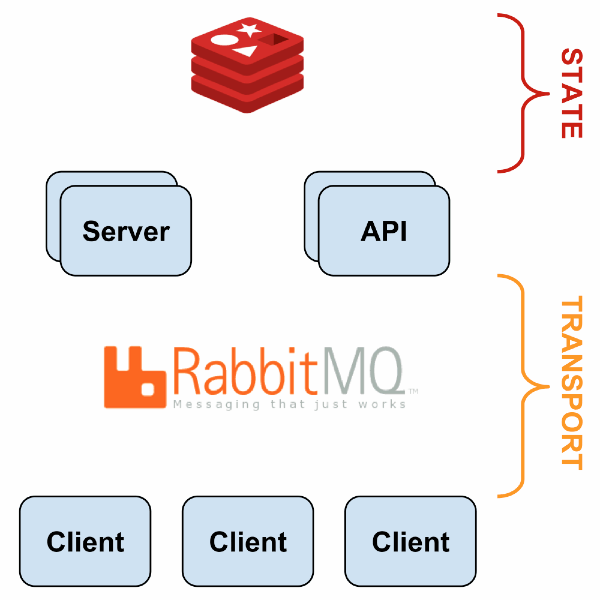
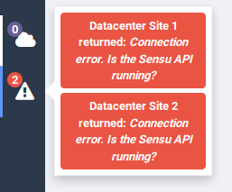

Sensu - 0.26.5
This documentation page describes the process of installation and configuration of an entire monitoring environment using Sensu as the Core and CentOS 7 as the base Operating System.
Basic information
Deploy date: 11th June, 2019
Official Website: https://sensu.io/
License: MIT License.
Directory Hierarchy
The two main Sensu directories are:
Installation directory
/opt/sensu is the installation directory. It contains services, binaries, libraries and
its own Ruby installation with the plugins installed using the command sensu-install.
Configuration directory
/etc/sensu contains the configuration files, plugins, and handlers. The configuration definition can be present
in /etc/sensu/config.json or as an independent JSON file in the directory /etc/sensu/conf.d/.
Introduction
The general sensu architecture is summarized as one or more servers that assign monitoring tasks to its clients through a message broker, and stores the results in a Database in Memory. Information like configuration and results is provided through an API.
{kind=link}
Sensu Services
sensu-client: It executes the tasks indicated in the Message Broker (RabbitMQ) by the Sensu server. It’s necessary to restart it if the client configuration changes (local checks, address, etc) to refresh the configuration. If you change a configuration in the client, it’s not necessary to restart the server.
sensu-server: Distributes the monitoring tasks through the message broker, and reacts executing the specified handlers when a result has a critical or warning state. It’s necessary to restart it if the server configuration changes (checks, handlers, etc) in order to refresh its execution parameters (send monitoring tasks and receive results).
sensu-api: Manages the service information provided from the Sensu-server to external systems like Uchiwa. It’s necessary to restart it if the server configuration changes (checks, handlers, etc) in order to update the informative layer.
{kind=link}
Concepts
Clients: Monitoring agents that execute checks and replies the results to its associated Sensu Server.
Subscriptions: A name that groups 0 or more clients around one particular role or responsibility.
Checks: Commands executed by the Sensu client which monitor a condition or collect measurements (server resources, services, etc).
Handlers: Actions executed by the Sensu server on events, such as sending an email alert, creating or resolving an incident (e.g. in PagerDuty, ServiceNow, etc), or storing metrics in a time-series database (e.g. Graphite).
Mutators: Transform event data prior to handling (i.e. add new attributes to the response)
Plugins: Provide executable scripts or other programs that can be used as Sensu checks, handlers or mutators.
Filters: Inspect event data and match its keys/values with filter definition attributes, to determine if the event should be passed to an event handler. Filters are commonly used to filter recurring events (i.e. to eliminate notification noise).
For more information, read [2].
Installation
This first installation procedure is the same in both: Sensu Server and Sensu Client. The procedure is explained for a machine whose Operating System is CentOS 7.
Install the Epel-Release repository
$ yum install epel-release
Add the Official Sensu repository, adding the following file to
/etc/yum.repos.d/sensu.repo[sensu] name=sensu-main baseurl=http://repositories.sensuapp.org/yum/el/7/x86_64/ gpgkey=https://repositories.sensuapp.org/yum/pubkey.gpg gpgcheck=0 enabled=1
Install Sensu
$ yum install sensu
Sensu Server
Note
It’s important to know that a Sensu Server can be also a Sensu Client.
After executing the previous steps, if you are not installing the Sensu Client, but the Sensu Server, proceed as follows:
Install the additional dependencies for managing the communication between clients-server.
RabbitMQ is the message broker that manages the communication.
Erlang is a programming language and a runtime dependency for RabbitMQ.
Redis works as Database in Memory and stores temporarily the monitoring information.
Uchiwa is a web Dashboard for visualizing Sensu status and Configuration.
$ yum install erlang redis uchiwa
RabbitMQ can be installed from its official RPM:
$ yum install https://www.rabbitmq.com/releases/rabbitmq-server/v3.6.6/rabbitmq-server-3.6.6-1.el6.noarch.rpm
Configuration
Service configuration
You should start and enable at boot time the following services:
1. Sensu Client
sensu-client
2. Sensu Server
uchiwa
sensu-server
sensu-api
redis
rabbitmq-server
RabbitMQ Configuration
It’s necessary to define authentication credentials to let Clients communicate in a secure way with the Sensu Server through the Message Broker RabbitMQ. This procedure is executed only once in the Sensu Server.
$ rabbitmqctl add_vhost /sensu
$ rabbitmqctl add_user sensu PASSWORD
$ rabbitmqctl set_permissions -p /sensu sensu ".*" ".*" ".*"
Sensu Configuration
1. Sensu Client
Add the Client definition in
/etc/sensu/config.jsonor in any file with json extension into the directory/etc/sensu/conf.d/, specifying hostname, subscriptions, etc.Example: /etc/sensu/conf.d/client.json
{ "client": { "name": "HOSTNAME", "bmc_address": "10.0.0.1", "subscriptions": [ "subscription-1", "subscription-2" ] } }
Add the Transport definition in the configuration directory:
Example: /etc/sensu/conf.d/transport.json
{ "transport": { "name": "rabbitmq", "reconnect_on_error": true } }
Add the RabbitMQ definition specifying the credentials previously defined:
Example: /etc/sensu/conf.d/rabbitmq.json
{ "rabbitmq": { "host": "SENSU_SERVER_IP", "port": 5672, "vhost": "/sensu", "user": "sensu", "password": "PASSWORD" } }
2. Sensu Server
Add the Uchiwa configuration file:
Example: /etc/sensu/conf.d/uchiwa.json
{ "sensu": [ { "name": "Site Name", "host": "127.0.0.1", "port": 4567, "ssl": false, "path": "", "user": "", "pass": "", "timeout": 10 } ], "uchiwa": { "host": "127.0.0.1", "port": 3000, "refresh": 10 } }
Plugins
Excluding the specific configurations that each plugin can have, the general process to add a plugin is described as follows:
Download the script into a directory readable by sensu user.
Define the check configuration in
/etc/sensu/config.jsonor as an independent JSON file in/etc/sensu/conf.d/, specifying the execution line, frequency, and which subscribers will be associated with the check.Restart sensu-server and sensu-api. If the check is defined as standalone (locally in the client) restart sensu-client.
Integration with Ansible
We implemented a Role in Ansible that contains the whole process of installation and configuration of a Sensu Client, and it’s integration with some plugins. Configuration files are generated dynamically using Ansible templates and pre-defined variables in the role.
The structure is:
---
sensu_clients_data:
compute-1:
subscriptions: ["compute-node","nvidia-gpu"]
compute-2:
subscriptions: ["compute-node"]
These subscriptions define the values present in the configuration file client.json.
Later in this documentation, these subscriptions are used also as conditionals in Ansible for the plugins installation and configuration.
Add a new Plugin
This procedure explains the general steps required to support a new plugin within the Sensu-Clients ansible role.
Note
The steps show the configuration of GPU Nvidia Plugin as an example.
Add a new subscription or use an existing one to associate the desired nodes with this plugin:
sensu_clients_data: compute-1: subscriptions: ["nvidia-gpu"] compute-2: subscriptions: ["nvidia-gpu"]
Install the dependencies if needed. You can add a conditional that checks if the current machine has the corresponding subscription defined.
Example:
when: '"nvidia-gpu" in sensu_clients_data[inventory_hostname].subscriptions'
Check if the plugin is installed (i.e verifying the presence of the script) and register this state into an Ansible variable:
- name: Nvidia plugin present stat: path: /opt/sensu/embedded/bin/metrics-nvidia.rb register: nvidia_plugin
Install the plugin if its presence was not registered in the last step:
- name: Install Nvidia Plugin shell: /usr/bin/sensu-install -p sensu-plugins-nvidia when: 'nvidia_plugin.stat.exists == false'
You can add a second conditional that executes this installation only if the current machine has the corresponding subscriptions defined.
Example:
when '"nvidia-gpu" in sensu_clients_data[inventory_hostname].subscriptions'
Troubleshooting
Connection error. Is the Sensu API running?
PROBLEM: Datacenter Site 1 returned: Connection error. Is the Sensu API running?
REASON 1: uchiwa.json has the default configuration (Two generic Datacenter configurations)
SOLUTION: Edit uchiwa.json with real information and restart uchiwa service.
REASON 2: Redis doesn’t support ipv6 (localhost resolves to ::1). Using “localhost” instead of 127.0.0.1 for the host configuration on systems that support IPv6 may result in an IPv6 “localhost” resolution (i.e. ::1) rather than an IPv4 “localhost” resolution [1]
SOLUTION: Update the Redis configuration (by default located in /etc/sensu/config.json), changing the attribute “host” as follows:
{ ... "redis": { "host": "127.0.0.1", "port": 6379 }, ... }
After that, please restart the sensu-server service.